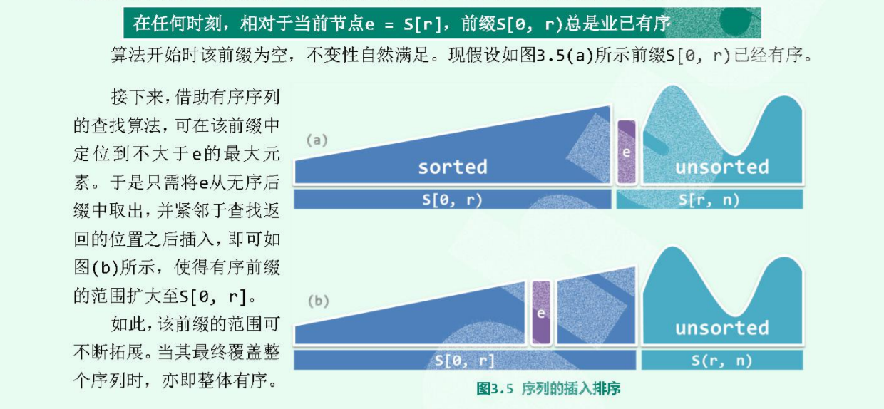

title: 插入排序
date: 2021-04-13 11:10:51
tags: 排序
更加实用于链表
插入排序的思想：始终将整个序列视为两个部分，有序的前缀和无序的后缀；通过反复的迭代，反复地将后缀的首元素转移至前缀中。
在任何时刻，相对于当前节点e=s[r], 前缀部分[0, r)总是有序，那么就可以用有序序列的查找算法，在前缀中查找到小于等于e的最大元素的位置，然后将当前节点e插入找到的位置之后插入。 如果存在重复元素，那么就是插在最后一个重复元素之后。

// 以列表为例： 因为列表插入排序方便，vector每次插入一个位置，都得后移
当序列完全有序的时候**O(n)**，完全逆序的时候则时 O(n^2)。时间复杂度平均意义下还是 O(n^2) 。
有最好的情况，而选择排序没有，选择排序的复杂度恒定**O(nlogn)**，而插入排序与逆序对数据有关，
O(n)**，只是需要扫描一趟即可。